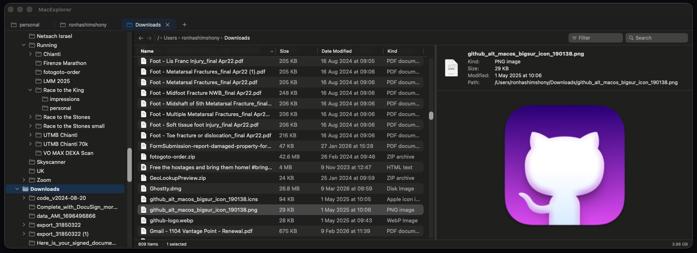

The file manager you've been missing. Tabs, folder tree, breadcrumb navigation, and a preview pane — all built natively in Swift.

Built from scratch as a native macOS app. Fast, lightweight, and familiar.
Multiple folders in one window. Cmd+T to open, Cmd+W to close. Drag tabs to reorder.
Expandable folder tree on the left. Always see where you are in the filesystem hierarchy.
Click any path segment to jump up. Back/forward buttons with full history.
See file contents without opening them. Images, PDFs, code, CSVs, ZIP archives, and more.
Search filenames across all subfolders. Results stream in live with progress tracking.
Cmd+Z to undo moves, renames, deletes, and folder creation. Full undo history.
Move files between folders with drag and drop. Conflict detection with clear alerts.
File changes from Finder or Terminal appear instantly. FSEvents-powered filesystem watching.
Built with Swift and SwiftUI. Fast, lightweight, respects system dark/light mode.
| Feature | MacExplorer | Finder |
|---|---|---|
| Tabs in one window | ✓ | ✓ |
| Folder tree sidebar | ✓ | ✗ |
| Breadcrumb navigation | ✓ | ✗ |
| Preview pane (inline) | ✓ | ✗ |
| Recursive search with streaming results | ✓ | ✗ |
| Undo file operations | ✓ | ✓ |
| Live filesystem updates | ✓ | ✓ |
| Open source | ✓ | ✗ |
Download MacExplorer for free. Requires macOS 14 (Sonoma) or later.
Download for macOS